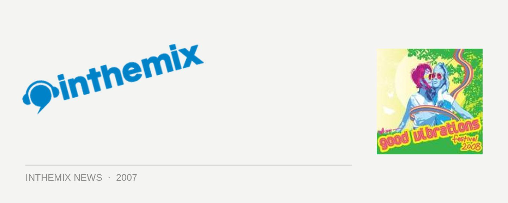

Good Vibrations lineup gets even bigger!
The lineup for next year’s Good Vibrations festival was big to begin, full of massive names from across the spectrum of dance, hip hop and indie/electro but now the selection of acts has ballooned out even further. You can now look forward to performances from The Nextmen with Yungun on MC duties, Tittsworth, Dirty Laundry as well as a selection of local performers across each state.
The Nextmen are no stranger to Australian shores, bringing a tightly-mixed fusion of hip hop, jazz, funk and party breaks and they were last here at the beginning of 2007 for the New Year festival season. And with Yungun on the MC duties, they’ll make for a formidable combination: while the rapper hails from the UK, he’s done a huge amount of work with Australian production outfits recently including A-Love, The Resin Dogs and Katalyst after an extended Aussie holiday earlier this year.
And hailing from the US, Tittsworth is also known for bringing the party: pushing the Baltimore club sound along with a rapid-fire mix of rock, rave, house and hip-hop, he’s turned heads with his Baltimore-slanted take on Justice’s D.A.N.C.E..
Dirty Laundry will be playing across the country, and there’s also a range of city-specific acts for each event that will include The Resin Dogs in Brisbane, Damn Arms in Melbourne, Grafton Primary in Sydney and The Funk Club Band in Perth.
CHECK OUT ITM’S FESTIVAL PAGE FOR MORE INFO, INTERVIEWS AND OTHER CONTENT IN THE LEADUP TO EVENT!